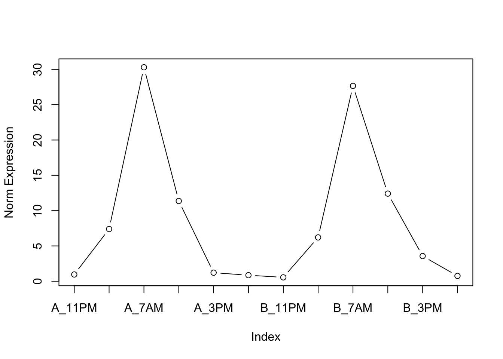
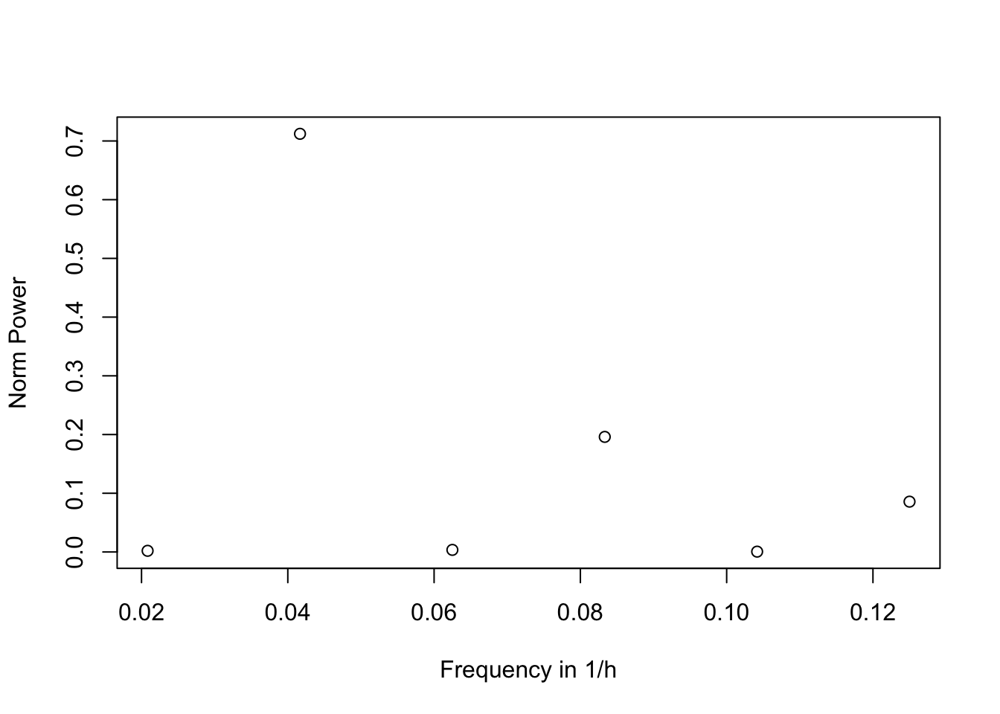

# Import package
library(pasilla)Neurogenomics Project 1
This project was published on GitHub (https://riborings.github.io/neurogenomics/project1.html).
Part 1
Next-Generation Sequencing (NGS) entails several high-throughput techniques that generate a big amount of data. The main two approaches involve long-read sequencing with Nanopore technology and short-read sequencing with an Illumina machine. In the latter case, Polymerase Chain Reaction (PCR) is performed by the sequencer to amplify the library and quantify gene expression.
In the ideal situation, we would expect to have a doubling of each RNA strand in a linear fashion, so that each molecule is duplicated and the ratio between the expression levels of the different genes is maintained. However, this process introduces different types of errors due to factors such as the the composition of the sequence (for example high fraction of G or C) or the secondary structure, stochasticity and mutation that make it impossible to deduce the absolute gene expression, especially for low-copy genes.
In addition, the sequencing process involves breaking the mRNA sequence into several pieces because the machine cannot sequence a full-length genome. Thus, multiple variants may originate from the same sequence, so we may think there are several copies of the same gene, but in reality it is one broken copy. Therefore, we may infer a wrong expression level. Instead, sequencing data provides a compositional measure of gene expression, where every observation (or gene) is quantified in relation to the rest of the pool. Thus, it is essential to normalise reads from different samples when drawing between-sample comparisons.
Part 2
The package with the data of interest is imported.
RNA-Seq data from Drosophila melanogaster is loaded from the package.
# Load data
pasCts <- system.file("extdata", "pasilla_gene_counts.tsv",
package = "pasilla", mustWork = TRUE)
pasAnno <- system.file("extdata", "pasilla_sample_annotation.csv",
package="pasilla", mustWork = TRUE)
cts <- as.matrix(read.csv(pasCts, sep = "\t", row.names = "gene_id"))
coldata <- read.csv(pasAnno, row.names = 1)
coldata <- coldata[ , c("condition", "type")]
rownames(coldata) <- sub("fb", "", rownames(coldata))
cts <- cts[, rownames(coldata)]The matrix cts contains the gene expression data in terms of the number of reads for 14599 genes from 7 samples.
# View head of counts assay
head(cts, 10) treated1 treated2 treated3 untreated1 untreated2 untreated3
FBgn0000003 0 0 1 0 0 0
FBgn0000008 140 88 70 92 161 76
FBgn0000014 4 0 0 5 1 0
FBgn0000015 1 0 0 0 2 1
FBgn0000017 6205 3072 3334 4664 8714 3564
FBgn0000018 722 299 308 583 761 245
FBgn0000022 0 0 0 0 1 0
FBgn0000024 10 7 5 10 11 3
FBgn0000028 0 1 1 0 1 0
FBgn0000032 1698 696 757 1446 1713 615
untreated4
FBgn0000003 0
FBgn0000008 70
FBgn0000014 0
FBgn0000015 2
FBgn0000017 3150
FBgn0000018 310
FBgn0000022 0
FBgn0000024 3
FBgn0000028 0
FBgn0000032 672Dimensions of the counts assay can be retrieved with the dim function.
# Store assay dimensions
mat_dim <- dim(cts)
# View assay dimensions
mat_dim[1] 14599 7Samples differ from one another in the library size. Therefore, read counts should be normalised.
# View raw library sizes
colSums(cts) treated1 treated2 treated3 untreated1 untreated2 untreated3 untreated4
18670279 9571826 10343856 13972512 21911438 8358426 9841335 Normalisation is performed by dividing the reads from every sample by the corresponding library size and multiplying by the library size of the first sample.
# Normalise all samples to library size of first sample
norm_cts <- apply(cts, 2, function(col) col / sum(col) * sum(cts[ , 1]))
# Check normalised library sizes
colSums(norm_cts) treated1 treated2 treated3 untreated1 untreated2 untreated3 untreated4
18670279 18670279 18670279 18670279 18670279 18670279 18670279 Part 3
A function to compute log means and variances for every feature in an assay is defined below, so that the same workflow can be applied both to untreated and treated samples.
# Define function to compute feature-wise log means and vars
find_log_stats <- function(assay, na.rm = FALSE, pseudocount = 1) {
# Compute row means and vars
gene_means <- rowMeans(assay, na.rm = na.rm)
gene_vars <- rowVars(assay, na.rm = na.rm)
# Take log of means and vars with pseudocount
gene_log_means <- log(gene_means + pseudocount)
gene_log_vars <- log(gene_vars + pseudocount)
# Combine data into a data.frame
df <- data.frame(Var = gene_log_vars, Mean = gene_log_means)
return(df)
}The log statistics of the genes from the untreated samples are computed.
# Subset data to untreated samples
control_cts <- norm_cts[ , grep("^untreated", colnames(norm_cts))]
# Find log means and vars for genes in control samples
control_stats <- find_log_stats(control_cts)The Poisson distribution fits the data relatively well for lower numbers of reads, but it creates bias for higher numbers of reads where the variance becomes larger than the mean. Such phenomenon is called overdispersion.
# Visualise fit of Poisson distribution to data
plot(control_stats$Mean, control_stats$Var, xlab = "Log Means", ylab = "Log Vars")
abline(a = 0, b = 1, col = "red")
legend("topleft", "Poisson Fit", lty = 1, col = "red")The dispersion coefficient of the negative binomial distribution can be determined by fitting the corresponding mean-variance relationship to the data.
# Fit dispersion coefficient of negative binomial distribution to data
nls_fit <- nls(Var ~ Mean + a * Mean^2, data = control_stats, start = list(a = 0))
summary(nls_fit)
Formula: Var ~ Mean + a * Mean^2
Parameters:
Estimate Std. Error t value Pr(>|t|)
a 0.052201 0.000206 253.3 <2e-16 ***
---
Signif. codes: 0 '***' 0.001 '**' 0.01 '*' 0.05 '.' 0.1 ' ' 1
Residual standard error: 0.8978 on 14598 degrees of freedom
Number of iterations to convergence: 1
Achieved convergence tolerance: 1.408e-11Unlike the Poisson distribution, the negative binomial distribution fits well the data both for lower and higher numbers of reads.
# Define var-mean relationship of negative binomial distribution
disper_coef <- summary(nls_fit)$coefficients["a", "Estimate"]
neg_binom <- function(x) x + disper_coef * x^2
# Visualise fit of negative binomial distribution to data
plot(control_stats$Mean, control_stats$Var, xlab = "Log Means", ylab = "Log Vars")
curve(neg_binom, col = "red", add = TRUE)
legend("topleft", "Negative Binomial Fit", lty = 1, col = "red")The same pipeline is applied to the genes from the treated samples.
# Subset data to treated samples
treated_cts <- norm_cts[ , grep("^treated", colnames(norm_cts))]
# Find log means and vars for genes in treated samples
treated_stats <- find_log_stats(treated_cts)# Visualise fit of Poisson distribution to data
plot(control_stats$Mean, treated_stats$Var, xlab = "Log Means", ylab = "Log Vars")
abline(a = 0, b = 1, col = "red")
legend("topleft", "Poisson Fit", lty = 1, col = "red")# Fit dispersion coefficient of negative binomial distribution to data
nls_fit <- nls(Var ~ Mean + a * Mean^2, data = treated_stats, start = list(a = 0))
summary(nls_fit)
Formula: Var ~ Mean + a * Mean^2
Parameters:
Estimate Std. Error t value Pr(>|t|)
a 0.0439520 0.0002798 157.1 <2e-16 ***
---
Signif. codes: 0 '***' 0.001 '**' 0.01 '*' 0.05 '.' 0.1 ' ' 1
Residual standard error: 1.227 on 14598 degrees of freedom
Number of iterations to convergence: 1
Achieved convergence tolerance: 7.173e-11# Define var-mean relationship of negative binomial distribution
disper_coef <- summary(nls_fit)$coefficients["a", "Estimate"]
neg_binom <- function(x) x + disper_coef * x^2
# Visualise fit of negative binomial distribution to data
plot(treated_stats$Mean, treated_stats$Var, xlab = "Log Means", ylab = "Log Vars")
curve(neg_binom, col = "red", add = TRUE)
legend("topleft", "Negative Binomial Fit", lty = 1, col = "red")Judging by our results, we can estimate that the different untreated and treated samples in this experiment are biological repeats, because these changes are represented by a greater variability that corresponds to a negative binomial distribution and less to a Poisson distribution, this is due to the variability that exists between different animals/tissues. As we can see, our distribution also better fits a negative binomial distribution.
Part 4
# Transform normalised assay to log assay with pseudocount
log_cts <- log(norm_cts + 1)# Visualise log counts of treated vs untreated samples
plot(log_cts[ , "untreated1"], log_cts[ , "treated1"],
xlab = "Log Expression (untreated)", ylab = "Log Expression (treated)")
grid()# Identify gene that is expressed more in treated samples
control_cond <- control_stats$Mean > 8.5 & control_stats$Mean < 9.5
treated_cond <- treated_stats$Mean > 10 & treated_stats$Mean < 11
gene1 <- rownames(norm_cts)[control_cond & treated_cond]
gene1[1] "FBgn0033367"# Identify gene that is expressed more in untreated samples
control_cond <- control_stats$Mean > 7 & control_stats$Mean < 8
treated_cond <- treated_stats$Mean > 4 & treated_stats$Mean < 5
gene2 <- rownames(norm_cts)[control_cond & treated_cond]
gene2[1] "FBgn0039155"The expression of FBgn0039155 shows consistent differences between the control and treated conditions.
# Visualise differential expression of selected gene
plot(log_cts[gene2, ], ylab = "Log Expression")
title(gene2)Our data fit the basic assumptions of DEseq, as it based on negative binomial distribution.
library(DESeq2)# Run deseq2
dds <- DESeqDataSetFromMatrix(countData = cts,
colData = coldata,
design = ~ condition)
dds <- DESeq(dds)
res <- results(dds)
reslog2 fold change (MLE): condition untreated vs treated
Wald test p-value: condition untreated vs treated
DataFrame with 14599 rows and 6 columns
baseMean log2FoldChange lfcSE stat pvalue
<numeric> <numeric> <numeric> <numeric> <numeric>
FBgn0000003 0.171569 -1.02604541 3.805503 -0.26962147 0.7874515
FBgn0000008 95.144079 -0.00215142 0.223884 -0.00960955 0.9923328
FBgn0000014 1.056572 0.49673557 2.160264 0.22994204 0.8181368
FBgn0000015 0.846723 1.88276170 2.106432 0.89381546 0.3714206
FBgn0000017 4352.592899 0.24002523 0.126024 1.90459450 0.0568328
... ... ... ... ... ...
FBgn0261571 8.73437e-02 -0.9002942 3.810165 -0.2362875 0.813210
FBgn0261572 6.19714e+00 0.9591315 0.777017 1.2343759 0.217063
FBgn0261573 2.24098e+03 -0.0126158 0.112701 -0.1119412 0.910870
FBgn0261574 4.85774e+03 -0.0152569 0.193148 -0.0789905 0.937040
FBgn0261575 1.06836e+01 -0.1635594 0.938909 -0.1742016 0.861707
padj
<numeric>
FBgn0000003 NA
FBgn0000008 0.996927
FBgn0000014 NA
FBgn0000015 NA
FBgn0000017 0.282361
... ...
FBgn0261571 NA
FBgn0261572 NA
FBgn0261573 0.982035
FBgn0261574 0.988143
FBgn0261575 0.967912Curiously, FBgn0039155 was designated as the most differentially expressed gene by DESeq2 (effect size: 4.62, p-value: 4.07^{-161}), whereas FBgn0033367 did not appear among the top 10 genes but showed statistical significance (effect size: -1.45, p-value: 10^{-9}).
# View genes ordered by differential expression
sorted_res <- res[order(res$padj), c("log2FoldChange", "padj")]
head(sorted_res, 10)log2 fold change (MLE): condition untreated vs treated
DataFrame with 10 rows and 2 columns
log2FoldChange padj
<numeric> <numeric>
FBgn0039155 4.61901 4.06607e-161
FBgn0025111 -2.89986 6.38334e-112
FBgn0029167 2.19700 3.69146e-110
FBgn0003360 3.17967 1.98854e-105
FBgn0035085 2.56041 2.14348e-74
FBgn0039827 4.16252 1.74302e-68
FBgn0034736 3.51144 4.59386e-57
FBgn0029896 2.44502 3.03284e-55
FBgn0000071 -2.67958 8.79175e-46
FBgn0051092 -2.32771 1.09010e-36Part 5
The circadian RNA-Seq data from Zebrafish is imported and processed into a matrix with unique rownames.
# Import dataset
circ_df <- read.csv("data/CircadianRNAseq.csv")
# Preprocess dataset
rownames(circ_df) <- make.unique(circ_df$GeneSymbol)
circ_df[ , c("RefSeqID", "GeneSymbol")] <- NULL
circ_mat <- as.matrix(circ_df)The last five rows (or genes) of the assay are printed below. From the colnames, it can be deduced that samples were collected from 11 PM until 7 PM for two consecutive days, with a time interval of 4 hours.
# Show expression of last 5 genes
tail(circ_mat, 5) A_11PM A_3AM A_7AM A_11AM A_3PM A_7PM
zgc:136896 255.99900 209.97600 125.42200 143.07200 112.50300 101.81700
LCP1 5.72658 6.62624 6.62286 9.62324 5.98339 5.37718
Rab3gap1.1 11.32120 14.44910 15.91110 11.89190 13.33890 12.65970
ACTR3 50.64750 56.36470 66.65160 85.98560 54.14030 59.21070
UBXN4 13.65380 15.55590 23.63540 18.67810 18.75290 16.04330
B_11PM B_3AM B_7AM B_11AM B_3PM B_7PM
zgc:136896 201.12300 118.10400 255.72500 89.71120 92.12400 86.27090
LCP1 3.90986 9.07169 6.51965 6.85435 5.85492 4.42235
Rab3gap1.1 10.15590 16.13480 13.85730 15.99760 15.21870 16.85700
ACTR3 53.61420 58.49680 51.49100 46.21930 50.31010 45.71560
UBXN4 13.86520 20.21520 15.92240 19.05500 19.76430 19.02300The expression of the per1a gene shows a rather consistent periodicity of 24 hours over the two days of sampling. Such observation agrees with the literature, as per1a is one of the genes responsible for the circadian rhythm of insects as well as mammals, where it is mostly expressed in the area of the brain known as suprachiasmatic nucleus (SPN).
# Visualise oscillatory pattern of per1a gene over samples
plot(circ_mat["per1a", ], ylab = "Norm Expression", type = "b", xaxt = "n")
axis(1, at = 1:12, labels = colnames(circ_mat)) 
# Find frequency powers
powers <- fft(circ_mat["per1a", ])
powers <- as.numeric(powers * Conj(powers))[2:(1 + length(powers) / 2)]
norm_powers <- powers / sum(powers)# Find base frequencies
t <- 4
min_freq <- 1 / (ncol(circ_mat) * t)
max_freq <- 1 / (2 * t)
freq_range <- seq(from = min_freq, to = max_freq, by = min_freq)# Visualise frequency components of oscillatory pattern for per1a
plot(freq_range, norm_powers, xlab = "Frequency in 1/h", ylab = "Norm Power")
Between the options of (a) designing an experiment with (a) a higher time resolution or (b) a longer duration, we believe that option (b) is preferred, because, as we learned and applied at the beginning of the exercise, in order to get more reliable results, there is first of all a need to perform repeated measurements of the same situation. Therefore, if we want to prove that a certain gene operates at a circadian frequency, we must first measure it a sufficient number of times in order to prove that it is not an error/noise/non-normalized results and more. In addition, in order to show that this is not a temporary or passing phenomenon, measurement of multiple days will make it possible to prove that the gene works in a circadian manner regularly. However, option (a) can yield a more accurate estimate of the frequency components of the signal and to increase the Nyquist frequency, so it can be useful in situations where we want to get the best shape of the signal expressing the expression level or get a wider range of frequencies along the way.
Frequency analysis represents a more powerful tool than time analysis to detect the oscillatory nature of biological signals. Because signals are almost always composed by several waves with different sub-frequencies and mixed up with noise, it is not practical to study their oscillatory nature in the time domain. Instead, the frequency domain allows to separate the frequency components of the signal, which can be thereby described as the sum of simple waves, such as sine and cosine functions. In addition, working with frequencies you can take out noises and get better results for the circadian cycle.
# Define function to obtain frequency powers with fft
compute_powers <- function(time_series) {
powers <- fft(time_series)
powers <- as.numeric(powers * Conj(powers))[2:(1 + length(powers) / 2)]
norm_powers <- powers / sum(powers)
return(norm_powers)
}# Obtain frequency powers for every gene in assay
power_mat <- t(apply(circ_mat, 1, compute_powers))
# Sort genes by their 24-hour frequency power
power_idx <- order(power_mat[ , 2], decreasing = TRUE)
sorted_powers <- rownames(power_mat)[power_idx]
# sort provides an easier way
# sorted_powers <- sort(power_mat[ , 2], decreasing = TRUE)
head(sorted_powers, 10) [1] "atxn1b" "fus" "nr1d2b" "rdh1l" "ankrd10a" "phyhd1"
[7] "arntl1b.1" "ARNTL2" "Ldhd" "aclya" We found out that one of the relevant genes - nr1d2b, is involved in regulation of circadian rhythm.
# Check if na values are present
sum(is.na(sorted_powers))[1] 0Part 6
# Compute log statistics of each gene with custom function from part 3
circ_stats <- find_log_stats(circ_mat, na.rm = TRUE)The genes are binned by similarity in library size and a z-score is calculated within each bin. The top 40 genes with the highest z-score are then inspected to understand their relation with circadian rhythms.
library(dplyr)
library(tibble)
# Bin genes and compute their z-score
zscore_df <- circ_stats %>%
rownames_to_column("GeneSymbol") %>%
filter(Mean >= 3) %>%
mutate(Bin = ntile(Mean, 20)) %>%
group_by(Bin) %>%
mutate(ZScore = (Var - mean(Var)) / sd(Var)) %>%
arrange(desc(ZScore))
# View genes sorted by z-score
knitr::kable(head(zscore_df, 40), digits = 2)| GeneSymbol | Var | Mean | Bin | ZScore |
|---|---|---|---|---|
| CS.2 | 9.77 | 3.67 | 11 | 4.82 |
| LOC792433 | 7.41 | 3.09 | 2 | 4.45 |
| rho | 11.62 | 4.90 | 18 | 3.75 |
| exorh.1 | 16.50 | 9.71 | 20 | 3.72 |
| zgc:136930 | 7.83 | 3.59 | 10 | 3.57 |
| zgc:194737 | 6.13 | 3.02 | 1 | 3.51 |
| .469 | 6.77 | 3.14 | 3 | 3.47 |
| si:ch211-132b12.7.1 | 8.09 | 3.67 | 11 | 3.43 |
| zgc:92061.1 | 7.97 | 3.54 | 9 | 3.35 |
| zgc:103748 | 6.88 | 3.36 | 7 | 3.32 |
| olfm1b.1 | 6.22 | 3.26 | 5 | 3.25 |
| fabp7b | 7.76 | 3.52 | 9 | 3.18 |
| cldna | 6.14 | 3.22 | 5 | 3.17 |
| regulation of transcription, DNA-dependent .1 | 5.77 | 3.01 | 1 | 3.16 |
| .120 | 8.30 | 4.00 | 14 | 3.13 |
| nr1d2b.1 | 7.30 | 3.56 | 10 | 3.10 |
| bhlhb3l | 8.79 | 4.06 | 15 | 3.09 |
| .161 | 7.74 | 3.82 | 13 | 3.06 |
| aqp3a | 8.69 | 4.19 | 15 | 3.01 |
| FOS | 6.62 | 3.32 | 6 | 3.01 |
| scinlb | 6.55 | 3.38 | 7 | 3.01 |
| cfdl | 7.66 | 3.90 | 13 | 2.99 |
| Cox7c | 8.77 | 4.36 | 16 | 2.96 |
| CFL1 | 8.08 | 3.98 | 14 | 2.94 |
| zgc:162144 | 7.07 | 3.57 | 10 | 2.90 |
| Camk2n1 | 5.84 | 3.26 | 5 | 2.87 |
| Cyp11b2 | 5.94 | 3.17 | 4 | 2.86 |
| arg2 | 5.90 | 3.15 | 4 | 2.83 |
| icn2 | 6.94 | 3.61 | 10 | 2.79 |
| ndrg1l | 9.38 | 4.58 | 17 | 2.79 |
| .241 | 5.65 | 3.04 | 2 | 2.78 |
| cldnb | 6.78 | 3.43 | 8 | 2.77 |
| UQCRQ | 7.08 | 3.74 | 12 | 2.74 |
| per1b | 7.25 | 3.66 | 11 | 2.74 |
| zgc:63920.1 | 5.58 | 3.05 | 2 | 2.72 |
| Cry3 | 5.91 | 3.14 | 3 | 2.71 |
| gria2b | 6.26 | 3.29 | 6 | 2.69 |
| flr.1 | 5.65 | 3.21 | 5 | 2.68 |
| si:dkey-7c18.24 | 8.27 | 4.19 | 15 | 2.67 |
| LOC563601 | 5.86 | 3.12 | 3 | 2.66 |
We can detect some known circadian genes from this table: For example the gene nr1d2b is involved in regulation of circadian rhythm. In addition, the gene bhlhb3l is involved in regulation of circadian rhythms. It Is expected that circadian genes will also be variable gene, as they are changing over time during the day, so it make sense that they have big differences in expression levels. Also, changes in environmental conditions throughout the day may lead to the need for the body to adapt to different conditions such as different weather during the day or night or light and darkness, therefore the ability to change in cycles over time can lead to increased variability in expression